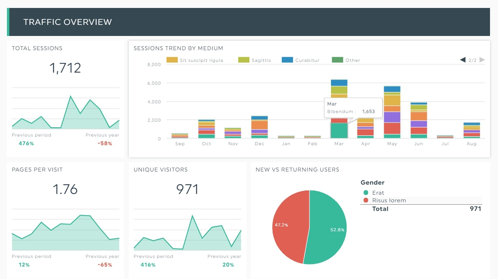

Gaming: Where Strategy Meets Creativity
My Gaming Journey
Gaming represents more than entertainment for me—it's a platform for strategic thinking, community building, and creative problem-solving. My gaming interests span from survival world-building to competitive first-person shooters, and I often combine gaming with programming to create custom modifications and automation tools.
Minecraft: Building Survival Worlds
In Minecraft, I focus on survival mode world-building, where resource management, architectural planning, and long-term strategic thinking converge. Creating sustainable settlements requires the same analytical skills I apply to data science projects.
My Minecraft Philosophy
- Establish efficient resource gathering systems early in the game
- Design aesthetically pleasing yet functional base structures
- Implement redstone automation for repetitive tasks
- Balance exploration with consolidation of established territories
- Document building techniques for future reference and improvement
Battlefield 6: Competitive Gaming
Battlefield 6 represents the competitive dimension of my gaming interests. The large-scale combat scenarios demand team coordination, situational awareness, and rapid decision-making under pressure.
Competitive Gaming Skills
- Team Coordination
- Communicating effectively with squad members for tactical advantages
- Situational Awareness
- Processing environmental information to anticipate enemy movements
- Adaptability
- Adjusting strategies based on evolving battlefield conditions
- Objective Focus
- Prioritizing team objectives over individual performance metrics
Gaming and Professional Development
- Problem-Solving - Both gaming and programming require breaking complex challenges into manageable components
- Strategic Planning - Long-term thinking in survival games mirrors project planning in software development
- Community Engagement - Building relationships in gaming communities translates to professional networking skills
- Performance Optimization - Maximizing efficiency in games parallels optimizing code performance
Gaming communities provide valuable opportunities for collaboration, leadership, and continuous learning in dynamic environments.
Explore gaming communities and discussions on Reddit Gaming.